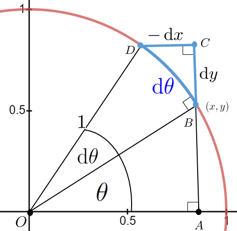
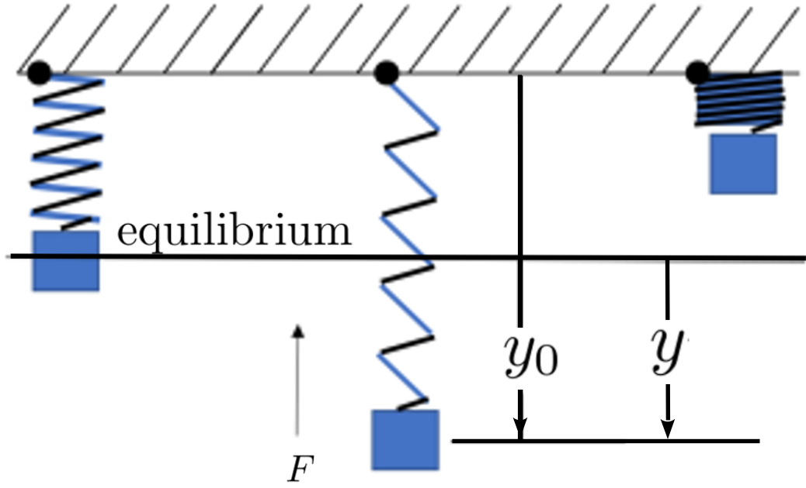

Section6.2The Differentials of the Sine and Cosine Functions
Subsection6.2.1Circular Motion
Recall that when a central angle \(\theta\text{,}\) of a unit circle is measured in radians then the arclength subtended by that angle will also be \(\theta\) as seen in Figure6.2.1. Similarly, when we increase the angle \(\theta\) by \(\dx{\theta}\) the blue arc is also of length \(\dx{\theta}\text{.}\) Moreover, by the Principle of Local Linearity5.2.5 the blue arc length can be thought of as an infinitely small straight line. Thus it is the hypotenuse of the blue triangle.

Figure6.2.1.
Notice that when \(\theta\) is increased by \(\dx{\theta}\text{,}\)\(y\) is increased by \(\dx{y}\text{,}\) but \(x\) is decreased by \(\dx{x}\) which makes \(\dx{x}\) negative. But the sides of a triangle must be positive so the label on the blue triangle is \(-\dx{x}\text{.}\)
allow us to obtain the differential of either \(\sin(\theta)\) or \(\cos(\theta)\) provided only that we have the differential of the other. Use these identities to show the following:
(a)
If \(\dx(\sin(\theta))=\cos(\theta)\dx\theta\text{,}\) then \(\dx(\cos(\theta))=-\sin(\theta)\dx{\theta}\text{.}\)
(b)
If \(\dx(\cos(\theta))= -\sin(\theta)\dx{\theta}\text{,}\) then \(\dx(\sin(\theta)=\cos(\theta)\dx{\theta}\text{.}\)
Drill6.2.5.
Compute the differential, \(\dx{y}\text{,}\) of each of the following functions:
Assume that \(x=x(t)\) and \(y=y(t)\text{.}\) Find an equation relating \(\dx{x}\) and \(\dx{y}\text{.}\) Use this to compute \(\dfdx{y}{x}\text{,}\)\(\dfdx{y}{t}\text{,}\)\(\dfdx{x}{y}\text{,}\) and \(\dfdx{x}{t}\)
\(\displaystyle \sin(xy)=\cos^2(x+y)\)
\(\displaystyle \sin(y)=x\)
\(\displaystyle \sin(2y)=\sin^2(xy^2)\)
\(\displaystyle y^2\sqrt{1+\sin^2(x)}=\cos(y)\)
\(\displaystyle \sin(x^2+y)=y\cos(x)\)
\(\displaystyle y^2\sqrt{1+\cos^2(x)}=y^2+x\)
Problem6.2.7.
(a)
For a fixed value of \(k\text{,}\) what are the largest and smallest possible values for the slope of the tangent line to the curve \(y = kx + \sin(x)\text{?}\)
(b)
For which values of \(k\) will the graph of \(y = kx + \sin(x)\) have horizontal tangent lines?
(c)
For which values of \(k\) will the graph of \(y = kx + \sin(x)\) not have horizontal tangent lines?
(d)
Find the values of \(x\) where the lines tangent to \(y=\frac{x}{2}+\sin(x)\) are horizontal. Graph the function to verify your answers.
Problem6.2.8.
(a)
Show that for \(0\le x\le 2\pi\text{,}\) the \(x\) coordinates of the points where the tangent line of \(y=\sin(x)+\cos(x)\) is horizontal are \(\frac{\pi}{4}, \frac{3\pi}{4}, \frac{5\pi}{4}\) and \(\frac{7\pi}{4}\text{.}\)
(b)
What are the corresponding \(y\) coordinates?
Problem6.2.9.
(a)
Show that, if \(a\) is constant then \(y(\theta)=a\sin(\theta)\) satisfies the equation
Show that, if \(b\) is constant then \(y(\theta)=b\cos(\theta)\) also satisfies equation(6.3)
Problem6.2.10.
One of the authors once heard a television weatherperson remark that, We gain and lose daylight faster at the equinoxes than at the solstices. Recall that in Problem6.1.15 you were asked to find a formula for the number of hours of daylight in Santa Barbara, CA. You should have obtained the solution
which allow us to convert from polar to rectangular coordinates.
Given a functional relation between \(r\) and \(\theta\) like those we saw in Drill6.1.23 it should be clear that the differential ratio \(\dfdx{r}{\theta}\) is not the slope of the tangent line. However it is still the rate of change of \(r\) with respect to \(\theta\text{.}\)
Regardless of which coordinate system we use, the slope of the line tangent to a curve is still given by \(\dfdx{y}{x}\) for the same reason that \(\frac{\Delta y}{\Delta x}\) gives the slope of the line: Both \(\dfdx{y}{x}\) and \(\frac{\Delta y}{\Delta x}\) represent a displacement in the vertical direction divided by a displacement in the horizontal direction. But \(\dfdx{r}{\theta}\) is the rate of change of distance from the origin, \(r\text{,}\) with respect to a change of the angle, \(\theta\text{.}\)
Problem6.2.12.
(a)
Use equations(6.4) and (6.5) to find \(\dx{x}\) and \(\dx{y}\) in terms of \(\dx{r}\) and \(\dx{\theta}.\)
(b)
Show that the slope of the line tangent to the graph of \(r=r(\theta)\) (in polar coordinates) is given by
Find an equation of the line tangent to the Spiral of Archimedes, \(r=\theta\text{,}\)\(\theta\ge0\text{,}\) at \(\theta=\frac{\pi}{6}\text{,}\)\(\theta=\frac{\pi}{4}\text{,}\)\(\theta=\frac{\pi}{3}\text{,}\)\(\theta=\frac{\pi}{2}\text{,}\) and \(\theta=\pi\text{.}\) Graph the Spiral and your tangent lines together to confirm your computations.
(d)
Show that the line tangent to the Spiral of Archimedes is horizontal when \(\tan(\theta)=-\theta. \) Explain why this will only ever happen when the terminal side of the angle \(\theta\) is in the second or fourth quadrants.
(e)
Show that the line tangent to the Spiral of Archimedes is vertical when \(\tan(\theta)=\frac{1}{\theta}. \) Explain why this will only ever happen when the terminal side of the angle \(\theta\) is in the first or third quadrants.
Problem6.2.13.
Find the equation of the line tangent to the following curves at the given value of \(\theta.\)
(a)
\(r=\theta^2, \theta\ge0\)
\(\displaystyle \theta=0\)
\(\displaystyle \theta=\frac{\pi}{6}\)
\(\displaystyle \theta=\frac{\pi}{4}\)
\(\displaystyle \theta=\frac{\pi}{3}\)
\(\displaystyle \theta=\frac{\pi}{2}\)
\(\displaystyle \theta=\frac{37\pi}{6}\)
(b)
\(r=2+\sin(3\theta).\)
\(\displaystyle \theta=0\)
\(\displaystyle \theta=\frac{\pi}{6}\)
\(\displaystyle \theta=-\frac{\pi}{4}\)
\(\displaystyle \theta=\frac{\pi}{3}\)
\(\displaystyle \theta=-\frac{\pi}{2}\)
\(\displaystyle \theta=\frac{37\pi}{6}\)
(c)
\(r=\cos\left(\frac{\theta}{2}\right)\text{.}\)
\(\displaystyle \theta=\frac{\pi}{6}\)
\(\displaystyle \theta=-\frac{\pi}{6}\)
\(\displaystyle \theta=\frac{\pi}{4}\)
\(\displaystyle \theta=-\frac{\pi}{4}\)
\(\displaystyle \theta=\frac{\pi}{3}\)
\(\displaystyle \theta=-\frac{\pi}{3}\)
Subsection6.2.3The Brachistochrone Problem
Suppose a bead is sliding down a frictionless wire from point \(A\) to point \(B\) as seen below.
Assuming that the bead starts at rest and slides down the wire under the influence of gravity only, what shape do you think the wire must have if the bead descends from \(A\) to \(B\) in the least possible time. Galileo thought the path of least time had to be a circular arc as weve drawn it here, but he could not prove it. Think about this for a moment before reading on. What does your intuition tell you the solution must be?
In 1696 the Swiss mathematician Johann Bernoulli published the statement of the Brachistochrone Problem along with the following challenge:
I, Johann Bernoulli, address the most brilliant mathematicians in the world. Nothing is more attractive to intelligent people than an honest, challenging problem, whose possible solution will bestow fame and remain as a lasting monument. Following the example set by Pascal, Fermat, etc., I hope to gain the gratitude of the whole scientific community by placing before the finest mathematicians of our time a problem which will test their methods and the strength of their intellect. If someone communicates to me the solution of the proposed problem, I shall publicly declare him worthy of praise.
At the time an acrimonious rivalry existed between Continental and British mathematicians concerning whether Newtons Method of Fluxions or Leibniz Calculus Differentialis was the better approach to Calculus. Bernoulli didnt believe Newton would be able to solve the Brachistochrone Problem so the challenge was intended in part to show that Leibniz approach was better.
At that point in his life Newton had stopped doing science. He had been appointed Englands Warden of the Mint and was given the Herculean task of recalling and replacing all of the countrys coinage. He had nothing to gain by attempting the problem but the challenge probably irritated him because he later complained,
I do not love . . . to be . . . teezed by forreigners about Mathematical things.
According to his niece, Catherine Conduitt,
When the problem in 1696 was sent by Bernoulli Sir I. N. was in the midst of the great recoinage and did not come home till four from the Tower very much tired, but did not sleep till he had solved it, which was by four in the morning.
Newton submitted his solution anonymously but the presentation was so uniquely in his style of written mathematics that when he received it, Bernoulli immediately recognized that the solution had come from Newton because, as he put it,
I know the lion by his claw.
Johann Bernoulli also received solutions from his student, the Marquis de LHpital (whom we will meet again in Chapter12), his older brother Jacob Bernoulli, and Leibniz. Of course Johann had a solution of his own as well.
It turned out that the path of least time is an inverted cycloid7
. A cycloid is the curve generated by tracing the path of a point on the edge of a wheel as it rolls in a straight line without slipping, like the bicycle wheel below
The solution of the the Brachistochrone Problem is a bit beyond the scope of this course. But its solution, the cycloid curve, had been studied long before the invention of Calculus. Naturally, the invention of Calculus gave us a new window on the properties of cycloids.
For example, if you make a bowl whose cross section is an inverted cycloid then objects sliding to the center (again, we ignore friction) will take the same length of time to reach the bottom regardless of their starting position. This is known as the Tautochrone Problem. Christiaan Huygens8
used this fact to design a better pendulum clock than had previously existed. It would be difficult to express the cycloid as the graph of some curve: \(y=y(x)\text{.}\) But it is fairly simple to parameterize it, as we will see in Problem6.2.14. In our parameterization \(\theta\) will still represent an angle but this time the vertex of the angle is at the center of the wheel, which is in motion. This makes the parameterization a little more interesting. The placement of \(\theta\) is shown schematically in the next problem.
Problem6.2.14.
Let \(P\) be a point on a circle of radius \(a\) that is rolling on the \(x\)-axis and let \(P(\theta)=
\ParamEqTwo {x(\theta)} {y(\theta)}\) be the position of \(P\) when the ball has rolled through an angle of \(\theta\text{.}\)
(a)
Use the diagram above to show that the parameterization of \(P(\theta)\) is given by
Compute \(\dx{x}\) and \(\dx{y}\) in terms of \(\dx{\theta}.\)
Find the slope of the tangent line to the cycloid at an arbitrary point \(P\) in terms of \(\theta\text{.}\) Use this to confirm that the tangent line is horizontal at the apex of the cycloid.
of \(P\text{.}\) What do you notice about the speed of \(P\) in relation to the circles radius? Do you find this surprising? (Consider using equation(5.1).)
When is \(P\) moving the fastest and when is it moving the slowest? Does this make intuitive sense to you?
Subsection6.2.4Spin Casting, Redux
In Section5.9 we saw how Newtons fluxional approach to Calculus led us naturally to the notion of parametric equations, \(P(t)=\ParamEqThree { x=x(t)} { y=y(t)} { a\lt t \lt b}
\text{.}\)
Recall that in the Problem5.10.7 we asserted, without justification, that the centripetal force holding the spinning, molten glass in its circular path is given by the formula \(mr\omega^2\text{.}\) We now have the tools we need to justify this claim.
If an object having mass \(m\text{,}\) is revolving in a circle of radius \(r\) meters around an axis with an angular velocity of \(\omega\) radians/second, the centripetal force that keeps it moving in a circle is directed toward the center of the circle. Anything moving in a circular path is held on course by a centripetal or center seeking force.
Recall that force and acceleration are related by Newtons Second Law of Motion: \(\text{force}=\text{mass}\times\text{acceleration}.\) Thus to show that the force is what we said it was well need to show that the centripetal acceleration is given by \(r\omega^2\text{.}\)
Problem6.2.15.
To compute centripetal acceleration, we will consider the point \(P\) traveling around the circle, with radius \(r\text{,}\) so that its position at time \(t\) is given by
The velocity in the direction of motion, \(v=\dfdx{s}{t}\text{,}\) is tangent to the circle and is composed of the velocity in the \(x\) direction \(\left(\dfdx{x}{t}\right)\) and the velocity in the \(y\) direction \(\left(\dfdx{y}{t}\right)\text{:}\)\(v=
\ParamEqTwo
{\dfdx{x}{t}} {\dfdx{y}{t}}\) as seen below.
(a)
The magnitude of the velocity (speed) in the direction of motion is the length of \(v\text{.}\) Show that the speed of \(P\) is given by:
Note: This result also follows directly from the definition of radian measure. We want you to do it this way in this problem because you will do a similar computation for acceleration in part6.2.15.b below.
(b)
Assume that the angular velocity is constant: \(\dfdx{\theta}{t}=\omega\text{.}\) Acceleration, like velocity, consists of a magnitude and a direction. In this case, the centripetal acceleration, represented by \(a\) in our diagram below, is composed of the vertical acceleration \(\dfdxn{y}{t}{2},\) and horizontal acceleration \(\dfdxn{x}{t}{2}.\)
The length of the arrow, \(a\) is the magnitude of the centripetal acceleration. Compute \(\dfdxn{x}{t}{2}\) and \(\dfdxn{y}{t}{2}\text{,}\) and show that the length of the centripetal acceleration is given by
DIGRESSION: The Centripetal and Tangential Forces.
In Problem6.2.15 we assumed the angular velocity, \(\left(\dfdx{\theta}{t}=\omega\right)\) was constant, so that we could focus our attention on the centripetal force that keeps the point \(P\) moving in a circle. In Problem6.2.15 only the centripetal force was in play. But consider a model airplane flying at the end of a cord, as in the sketch below.
Now we have two forces to contend with. The tension in the cord (shown in red) supplies the centripetal (center seeking) force, while the force of the engine (thrust) will always be in the direction of motion, tangential to the path at \(P\) (shown in blue). Since the airplane will speed up or slow down depending on the magnitude of the thrust, the airplane is no longer constrained to fly at a constant angular velocity.
Finding an expression for the centripetal and tangential acceleration is a straightforward, though somewhat daunting, exercise in differentiation.
Problem6.2.16.
Show that if a point, \(P=
\ParamEqTwo
{x(t)}
{y(t)}
\text{,}\) is constrained to move in a circle (so that \(x=r\cos(\theta)\) and \(y=r\sin(\theta)\)) but that \(\dfdx{\theta}{t}\) is no longer constant, then the horizontal acceleration \(\left(\dfdxn{x}{t}{2}\right)\) and the vertical acceleration \(\left(\dfdxn{y}{t}{2}\right)\) are given by,
From Newtons Second Law of Motion, (\(\text{force}=\text{mass}\times\text{acceleration}\)), we see that the horizontal and vertical forces acting on the airplane are \(m\dfdxn{x}{t}{2}\) and \(m\dfdxn{y}{t}{2}\text{.}\) Wed like to resolve these into their centripetal and tangential components.
Problem6.2.17.
Show that the red terms in equations(6.7)and(6.8) are the horizontal and vertical components of the centripetal acceleration by confirming that they are the same as the \(\dfdxn{x}{t}{2}\) and \(\dfdxn{x}{t}{2}\) that you computed for part (b) of Problem6.2.15.
Problem6.2.17 suggests that the red terms in equations(6.7)and(6.8) are the horizontal and vertical components of the centripetal acceleration. If that is true (it is) then the blue terms must represent the tangential acceleration. Thus, by Newtons Second Law, we obtain the horizontal and vertical components of the tangential force by multiplying the horizontal and vertical accelerations by \(m\text{.}\) This gives us
All of our results so far are depicted in the sketch below.
Figure6.2.18.
Finally, we let \(s(t)\) represent the length of the circular arc traced by \(P\) at time \(t\text{.}\) Since \(\theta\) is measured in radians we know that the length of a circular arc, \(s\) is \(s=r\theta\text{.}\) Applying the Constant Multiple Rule we see that \(\dx{s}=r\dfdx{\theta}{t}\dx{t}.\) Since \(\dx{s}\) represents an infinitesimal displacement tangent to the circle we see that
In this form these equations express the relationship between the various accelerations in play (horizontal, vertical, centripetal, and tangential). The forces are obtained from Newtons Second Law by multiplying both sides of both equations by the mass, \(m\text{.}\) We, the authors, think of this as uncancelling \(m\text{.}\)
Drill6.2.19.
Use the diagram in Figure6.2.18 to show that the magnitude of the thrust, \(m\abs{\dfdxn{s}{t}{2}}\text{,}\) is given by
Much of what occurs in the real world recurs periodically. As we saw in Problem6.1.15 the number of hours of daylight in Santa Barbara, California (and everywhere else) changes regularly over the course of a year. The sun, moon, and stars rise and set regularly every 24 hours. The compression of your heart muscle repeats periodically every few seconds. Can you think of other examples of periodic behavior in the natural world?
The usefulness of the trigonometric functions, especially the sine and cosine, comes from the fact that they are also periodic. With enough effort the sine and cosine functions can be used to model any periodic behavior, but the phrase with enough effort covers a lot. It is possible to model the compression of your heart using only sines and cosines, but the required theory and methods are beyond the scope of this text. Well keep things simple.
A function \(y(t)\) is said to be a Simple Harmonic Oscillator (SHO) if it satisfies the second order differential equation
for some constant \(\omega\text{.}\)equation(6.9) is a little scary at first but it really isnt that bad. To simplify things suppose for a moment that \(\omega=1\text{.}\) Then we have \(\dfdxn{y}{t}{2}=-y\) which says simply that \(y(t)\) is a function whose second derivative is equal the negative of \(y\) itself.
Of course, you already know two such functions. Since
\begin{align*}
\dfdxn{\left(\sin(x)\right)}{x}{2}\amp{}=-\sin(x) \amp{}\text{ and }\amp{}\amp{}
\dfdxn{\left(\cos(x)\right)}{x}{2}\amp{}=-\cos(\theta),
\end{align*}
\(\sin(x)\) and \(\cos(x)\) are both SHOs.
Drill6.2.20.
Find two more SHOs. (Dont overthink this. Build from the two that you already know.)
Equation(6.9) is used to model vibrations of buildings, acoustics, AC circuits, molecular, and crystal vibrations; basically anything that oscillates, but where the effects of air resistance are negligible. In Section8.13, after we have expanded our repertoire of functions a bit, we will look at one way we can incorporate the role of air resistance into our computations so that we can extend the usefulness of our analysis.
Problem6.2.21.
(a)
Show that \(y=A\sin(\omega t) + B\cos(\omega t)\) satisfies equation(6.9). for any constants \(A\) and \(B\text{.}\)
(b)
Determine the values of the constants \(A\) and \(B\) if \(y ( 0 )=-2\) and \(\left.\dfdx{y}{t}\right|_{t=0}=0.\) plot the graph of \(y(t)\) for these values of \(A\) and \(B\text{.}\)
The classical physical example of a simple harmonic oscillator is an object with mass, \(m\text{,}\) hanging from one end of a spring, as shown below.
Figure6.2.22.A Simple Harmonic Oscillator: A Hanging Mass
Assume that our spring is anchored in some way at the top. When the weight of the object and the restoring force of the spring balance exactly we say that they are in equilibrium as illustrated by the leftmost spring in Figure6.2.22 . Robert Hooke10
(16351703), who we encountered back in Section5.10, was a leading elder scientist when Newton was a young, rising star in English science. Hooke was the first to show that the restoring force exerted by a spring (the force back toward equilibrium) is directly proportional to the length of its extension beyond equilibrium. This is known today as Hookes Law for Springs (or just Hookes Law) and it is true whether the spring is stretched or compressed.
If we let \(y=y(t)\) denote the vertical displacement of the mass from equilibrium then Hookes Law says that the restoring force of the spring is given by \(-ky\text{,}\) for some positive constant \(k\) (called the spring constant). For a relatively weak spring, \(k\) would have a small value. For a relatively strong spring, the value of \(k\) would be large. If we let \(F\) represent the restoring force acting on the hanging mass then we have
\begin{equation*}
F=-ky.
\end{equation*}
Since the spring constant, \(k\text{,}\) is positive the negative sign in front of \(k\) is necessary. But it is easy to misinterpret this. The negative sign does not mean that the force \(F\) is always negative (upward in our diagram). In the analysis above the sign of \(F\) will be the negative (opposite) of the direction of the displacement of \(y\text{.}\) If the spring is displaced in the positive direction (stretched downward in our diagram) then the \(-k\) in front guarantees that the force, \(F\text{,}\) will be (upward). Conversely if we displace the spring in the negative direction (compressed upward in the diagram) then the \(-k\) guarantees that \(F\) is positive.
As we have seen, the acceleration of an object is the second derivative of its position with respect to time, or \(\dfdxn{y}{t}{2}\text{.}\) Thus according to Newtons Second Law, the force acting on our mass will satisfy \(F=m\dfdxn{y}{t}{2}\text{.}\) Finally, since \(F\) represents the same force in both Hookes Law and Newtons Second Law, we see that the vertical displacement of our mass must satisfy the equation
You may be wondering why weve consistently neglected the force due to gravity (which will be the weight of the object or \(mg\) where \(m\) is its mass and \(g=9.8 \frac{\text{meters}}{\text{second}^2}\)) in equation(6.10)). Actually, this was accounted for when we chose our coordinate system so that \(y=0\) at the equilibrium point. At equilibrium the upward force from the spring exactly balances the downward force of gravity (thats why its called equilibrium) so we can proceed as if those forces are not there. This does not say that there are no other forces acting on the object, only that such forces as exist are exactly in balance; they add to zero.
If you buy this intuitive argument, then fine. If not, work through the following problem.
Problem6.2.25.
Remember that the positive direction is downward. Assume that the weight of the object extends the spring a distance of \(y_0\) as shown, and that \(y\) is the vertical displacement of the object from equilibrium.

Notice that the downward force is the weight of the object and the upward force is the pull of the spring.
(a)
Show that the vertical displacement of the object satisfies the equation
Use the fact that when the object is at rest, \(y=0\) to conclude that \(ky_0=mg\) and use this to conclude that the spring-object system still satisfies equation(6.10)
END OF DIGRESSION
Problem6.2.26.
Show that \(y(t)=2\cos\left(\sqrt{k/m}\cdot t\right) \) will satisfy equation(6.10).
(a)
Compute \(y(0)\) and \(\dfdxat{y}{t}{0}\text{.}\) If we are modeling a massspring system, what do these values represent physically?
(b)
Compare the graphs of \(y(t)\) for each of the following choices of \(k\) and \(m\text{.}\)
\(k=1\text{,}\)\(m=1\text{,}\)
\(k=4\text{,}\)\(m=1\text{,}\)
\(k=1\text{,}\)\(m=4\text{.}\)
In particular, how do the values of \(k\) and \(m\) affect the frequency of the oscillation? Is this consistent with what \(k\) and \(m\) represent physically?
(c)
For which values of \(y\) do the greatest and smallest velocities occur? What is the acceleration at each of these points? Is this consistent with the idea that the mass is transitioning from speeding up to slowing down and vice versa? Explain.
(d)
For which values of \(y\) is the acceleration the largest and the smallest? Is this consistent with both Newtons Second Law and Hookes Law? Explain.